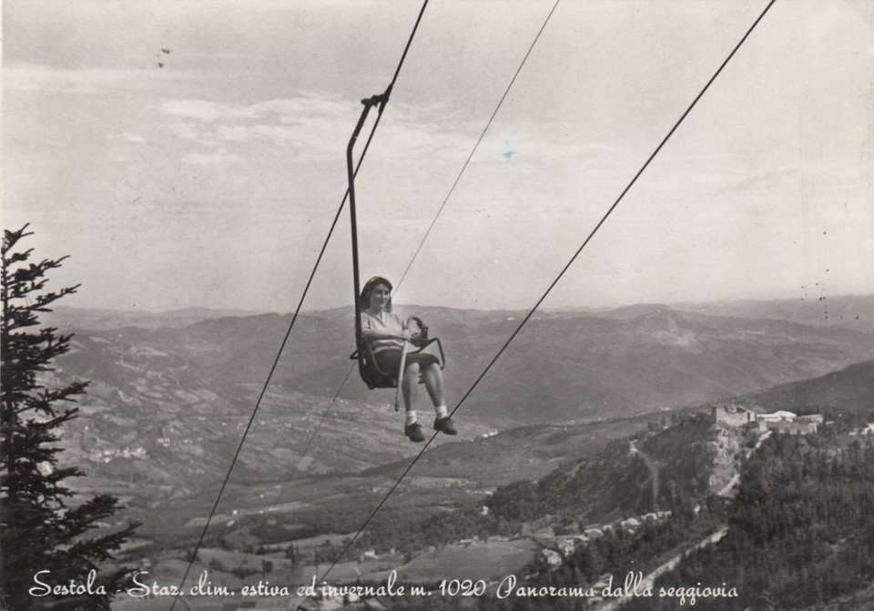
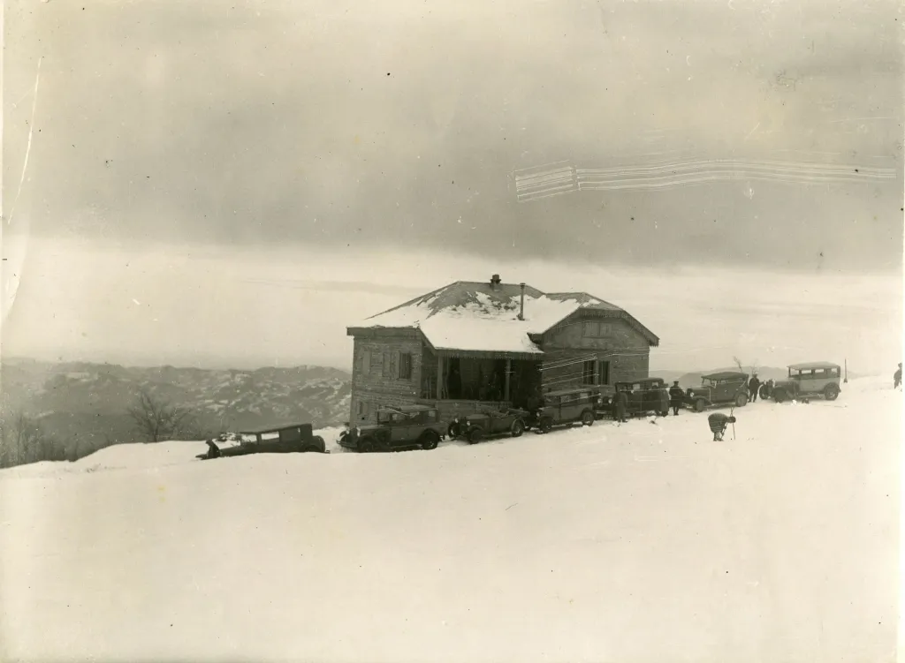
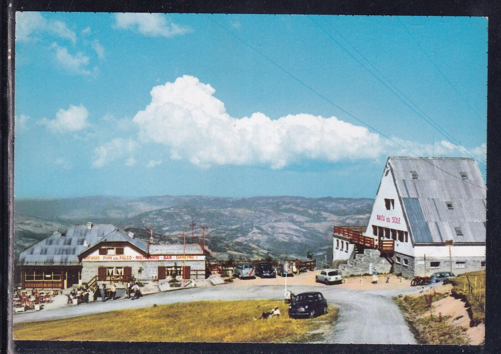

L’origine del piccolo villaggio alle piedi del Monte Cimone di “Pian del Faldo” (così si chiamava in origine) può essere fatta risalire a un periodo compreso tra gli anni ’20 e i ’30 del secolo scorso. Prima di allora infatti, la zona era un plateau ricoperto esclusivamente da pascoli e praterie frequentati principalmente da pastori transumanti e animali selvatici.
Il primo passaggio fondamentale fu quando la Forestale realizzò una strada per collegare il paese di Sestola con il vivaio forestale del Lago dei Budaloni (poi rinominato in Lago della Ninfa) e del Colle I Mezzi (Passo del Lupo). Fino ad allora infatti non esisteva una vera e propria strada ma solo una mulattiera utilizzata da pastori e cacciatori per raggiungere le località di Monte Ardicello e di Passo Serre.
Il piccolo villaggio cominciò a svilupparsi attorno al primo rifugio di montagna (conosciuto come "Lo Chalet") all'inizio degli anni '30 e subì una forte accelerazione nei primi anni ’50 quando venne realizzata la prima seggiovia Sestola-Pian del Falco. Inizialmente, infatti, la pratica dello sci era effettuata principalmente nei campi circostanti Sestola, a quote quindi molto più basse rispetto a quelle del Monte Calvanella e del Monte Cimone. Tuttavia, a causa della crescente richiesta di strutture e spazi più ampi, si crearono le condizioni perchè si sviluppasse la prima stazione sciistica vera e propria, ai piedi del Monte Calvanella.

La costruzione della seggiovia rappresenta dunque un passaggio fondamentale, sia per lo sviluppo del paese ma anche per tutto l'appennino Modenese dato che fu il primo impianto a fune realizzato in Emilia Romagna.
Questa stazione sciistica presentava una serie di piste che si snodavano dalla sommità del Monte Calvanella: una rossa, una blu ed una verde (lungo la strada). Le piste da sci di Pian del Falco oggi purtroppo sono tutte in disuso, sostituite da qualche tempo da quelle di Passo del Lupo e del Lago della Ninfa. La scelta è stata fatta sicuramente per via del cambiamento climatico, che ha costretto i gestori degli impianti a concentrare gli sforzi e gli investimenti su località dove fosse possibile installare impianti di innevamento artificiale. Inoltre una delle piste era realizzata tagliando a metà la piccola località, bloccando l’unica strada che porta a Passo del Lupo ed al Lago della Ninfa.
Se vuoi approfondire il tema delle piste da sci è possibile consultare la sezione dedicata.
La prima struttura ricettiva di Pian del Falco è stata, come detto, il Rifugio “Lo Chalet” (pronunciato “e’ Salé” alla Sestolese): una piccola baita in muratura che veniva raggiunta sia d'estate che in inverno usando i cavalli e le automobili.

Tale struttura nelle primissime foto si presenta come un unico fabbricato dal tetto basso, composto da varie falde, e da un piccolo porticato. Con la costruzione della seggiovia e l’aumento del numero di turisti, il fabbricato venne ampliato e modificato, con l’aggiunta di un tetto spiovente più alto, di un ulteriore stanza dal tetto piatto sulla destra e di un edificio più grande e alto sulla sinistra. Le venne anche cambiato il nome, diventando semplicemente il "Rifugio Pian del Falco". Guardando le foto "prima" e "dopo" risulta difficile ritrovare i lineamenti del vecchio fabbricato in quello più recente ma, analizzandolo attentamente, era ancora possibile riconoscere la forma della facciata originaria e delle fineste.
Successivamente, a poca distanza dallo Chalet venne edificato un fabbricato molto più imponente, dalla peculiare forma triangolare, denominato la "Baita del Sole".

Entrambi i fabbricati si trovano spesso raffigurati nelle cartoline dell'epoca, sia in configurazione invernale che estiva, e rappresentavano il punto più noto e frequentato di Pian del Falco.
Purtroppo però sia lo Chalet che la Baita del Sole non esistono più, sono stati abbattuti per fare spazio a nuovi fabbricati che, in qualche modo, cercano di ricordarne la forma. In epoca recente (anni 2010-20) infatti la caratteristica costruzione a punta della Baita è stata “clonata” ed oggi sono presenti due fabbricati identici che ospitano un condominio. Dello “Chalet” purtroppo invece non vi è più traccia, dato che è stato demolito ed al suo posto edificato un fabbricato ancora in fase di costruzione.
Poco dopo “La Baita del Sole” nacquero anche le altre due strutture caratteristiche del luogo: l’Hotel Calvanella e l'albergo ristorante Due Scoiattoli.
Mentre il primo è tutt’ora attivo, sia come hotel che ristorante, nella sua conformazione originaria, il secondo ha subito varie trasformazioni ed adesso è un condominio privato.
Se vuoi approfondire il tema delle strutture ricettive è possibile consultare la sezione dedicata.
Un'altro fabbricato caratteristico che è stato edificato negli anni '60 è la Chiesetta degli Alpini. La sua costruzione si inserisce nel periodo di forte espansione turistica e residenziale della località. Successivamente alla realizzazione della chiesa, il complesso è stato completato con l'aggiunta del caratteristico campanile che la affianca. La chiesa è ancora in uso e d'estate (principalmente in agosto) viene utilizzata per la messa della domenica.